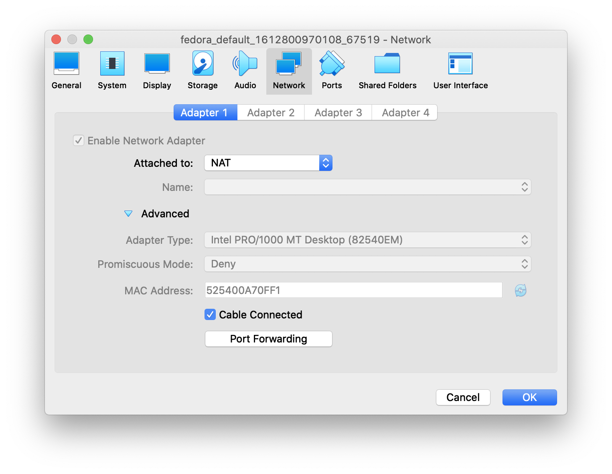

Vagrant là công cụ tuyệt vời để tạo máy ảo, với 3 câu lệnh, ta đã chui vào máy ảo mới tạo:
vagrant init
vagrant up
vagrant ssh
Bên dưới có rất nhiều "magic" xảy ra, đó là những giá trị mà Vagrant mang lại thay vì tạo máy ào bằng tay với VirtualBox/VMWare/KVM...
Vagrant ssh là câu lệnh thú vị và bất ngờ khi tìm hiểu: kết nối mạng từ máy thật (host) vào máy ảo (guest) như thế nào.
Test với máy ảo chạy fedora, không chỉnh sửa config gì sau khi vagrant init ngoài box:
config.vm.box = "fedora/33-cloud-base"
config.vm.box_version = "33.20201019.0"
Bật debug
Cách đơn giản để tìm hiểu 1 phần mềm bất kỳ là bật chế độ logging debug/verbose lên, vagrant không là ngoại lệ.
VAGRANT_LOG=info vagrant ssh
có các chế độ log nhiều hơn như VAGRANT_LOG=debug nhưng
với info cũng đã đủ rồi:
$ VAGRANT_LOG=info vagrant ssh
INFO global: Vagrant version: 2.2.6
INFO global: Ruby version: 2.4.9
INFO global: RubyGems version: 2.6.14.4
INFO vagrant: `vagrant` invoked: ["ssh"]
...
INFO subprocess: Starting process: ["/usr/local/bin/VBoxManage", "showvminfo", "63dfeb70-1337-4db3-84f4-4bf3514aa225"]
...
INFO ssh: Invoking SSH: /usr/bin/ssh ["vagrant@127.0.0.1", "-p", "2222", "-o", "LogLevel=FATAL", "-o", "Compression=yes", "-o", "DSAAuthentication=yes", "-o", "IdentitiesOnly=yes", "-o", "StrictHostKeyChecking=no", "-o", "UserKnownHostsFile=/dev/null", "-i", "/Users/user/me/fedora/.vagrant/machines/default/virtualbox/private_key"]
Last login: Wed Feb 10 08:22:51 2021 from 10.0.2.2
[vagrant@localhost ~]$
vagrant ssh vào máy ảo qua lo (loopback interface), dùng 127.0.0.1 chứ
không phải bất kỳ network interface nào khác.
VirtualBox networking modes
https://www.virtualbox.org/manual/ch06.html
VirtualBox có các networking modes sau:
Network Address Translation (NAT). (máy guest có thể kết nối internet)
NAT Network. (các máy guest có thể kết nôí đến nhau)
Bridged networking. (máy guest sử dụng network thật mà máy host đang dùng)
Internal networking. (???)
Host-only networking. (máy guest sẽ có địa chỉ IP mà máy host có thể truy cập)

Mặc định, vagrant sẽ dùng NAT, máy guest sẽ có thể kết nối internet, vagrant
sẽ cấu hình port forwarding, từ 1 port nào đó trên máy host, tới port 22 trên
máy guest, để có thể ssh: vagrant@127.0.0.1 -p 2222...

Khi cần chạy 1 service mà muốn các máy trong mạng đều truy cập được, máy ảo cần thêm 1 interface ở mode: bridge, nó sẽ hoạt động như 1 máy thật trong mạng, với IP của mạng thật.
Khi cần chạy 1 service mà muốn máy host truy cập được, có thể forward port với NAT nói trên, hoặc tạo 1 host-only interface.
SSH Key
Một Vagrant box tải từ vagrant cloud sẽ đảm bảo nó có sẵn user vagrant, cho phép ssh qua 1 cặp SSH key cung cấp sẵn. Sau lần đầu ssh vào, vagrant sẽ sinh 1 cặp key mới và thay thế cặp key mặc định này. https://www.vagrantup.com/docs/boxes/base#vagrant-user
~/me/fedora/.vagrant/machines/default/virtualbox/private_key
Toàn bộ thông tin này có trong output bình thường của lệnh vagrant up khi chạy lần đầu:
$ vagrant up; [0]
Bringing machine 'default' up with 'virtualbox' provider...
==> default: Importing base box 'generic/openbsd6'...
==> default: Matching MAC address for NAT networking...
==> default: Checking if box 'generic/openbsd6' version '2.0.6' is up to date...
==> default: A newer version of the box 'generic/openbsd6' for provider 'virtualbox' is
==> default: available! You currently have version '2.0.6'. The latest is version
==> default: '3.2.4'. Run `vagrant box update` to update.
==> default: Setting the name of the VM: openbsd_default_1613198270097_41776
==> default: Fixed port collision for 22 => 2222. Now on port 2200.
==> default: Clearing any previously set network interfaces...
==> default: Preparing network interfaces based on configuration...
default: Adapter 1: nat
==> default: Forwarding ports...
default: 22 (guest) => 2200 (host) (adapter 1)
==> default: Running 'pre-boot' VM customizations...
==> default: Booting VM...
==> default: Waiting for machine to boot. This may take a few minutes...
default: SSH address: 127.0.0.1:2200
default: SSH username: vagrant
default: SSH auth method: private key
default:
default: Vagrant insecure key detected. Vagrant will automatically replace
default: this with a newly generated keypair for better security.
default:
default: Inserting generated public key within guest...
default: Removing insecure key from the guest if it's present...
default: Key inserted! Disconnecting and reconnecting using new SSH key...
==> default: Machine booted and ready!
Kết luận
Với những hiểu biết này, ta đã có thể tạo các máy ảo và dùng như vagrant, hay thậm chí tạo các vagrant box để tự dùng.
https://www.vagrantup.com/docs/boxes/base
Xem thêm
Hướng dẫn vagrant cơ bản tại https://www.familug.org/2020/02/vagrant.html